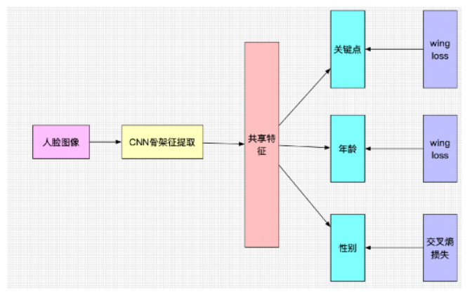

Architecture
四段流水线，对应仓库里的四个目录。
文字依据 README「项目架构」与源码接口；表格给出可点击的文件路径。训练权重与数据不在仓库中。
| 阶段 | README 说法 | 本仓库实现 | 源码里能直接读到的接口 |
|---|---|---|---|
| 检测 | 人脸检测，锁定目标框 | yoloV3 人脸检测/ |
Yolov3 / Yolov3Tiny；predict.py 读视频、letterbox 到可配尺寸（常见 416）、NMS |
| 关键点与属性 | 108 点矫正、年龄、性别；并可做活体思路 | resnet 108人脸关键点/ |
ResNet 多头：landmarks / gender / age / ol；默认训练 num_classes=196（98 点 × 坐标）；wing_loss |
| 姿态 | 欧拉角不符预期则不做身份校验 | resnet34 姿态检测/ |
predict.py 输出 yaw、pitch、roll，并乘 90 还原角度量纲 |
| 识别 | 一对多；作者自述误检率与通过率 | ArcFace/ |
Backbone(ir_se, depth=50)，512 维、112×112；Arcface 头 s=64, m=0.5；make_facebank.py 按人求平均特征 |
1. YOLOv3 人脸检测
README 建议训练时直接使用 Ultralytics 风格的成熟实现，并给出上游教程仓库 WZMIAOMIAO / yolov3_spp（第三方）。本目录是作者自己联调的检测代码，cfg/face.names 只有一类 Face。
作者写明的坑：这份 YOLOv3「不是标准 U 版」，缺少梯度累积、数据增强与学习率退火等，自行训练「90% 的概率梯度不下降」；显存不够、batch 太小时训不出来。另写明不要用这里的 yolov3-tiny 去训练，预测尚可，但 NMS 与 U 版差异大；若只要单人，可把 topk 取 1。
2. 关键点多任务
README 标题写「人脸 108 关键点」，正文又写「96 关键点检测多任务」。源码默认 num_classes=196，注释说明是「关键点个数 × 2」，即 98 个点的 (x, y)。公开数据方面，README 点名 WFLW（98 点，第三方数据集，仓库未附带）。
共享 CNN 骨干后分出关键点、年龄、性别头；关键点与年龄用 Wing Loss，性别用交叉熵。README 说曾把姿态塞进同一套联合训练，效果不理想。部分脚本页眉写 Author: Eric.Lee，按上游注释保留，见来源页。

162975652-…png）。图中是多任务头与损失，不是摄像头截图。仓库未单独声明该图是否改绘自论文，按 README 原图引用。3. 姿态：欧拉角回归
README 把人脸看成「朝观察者飞来的飞机」：pitch 抬头、yaw 摇头、roll 转头。实现上是 ResNet 回归三维，resnet34 姿态检测/predict.py 将网络输出乘 90 得到角度。README 说数据集名称类似 face_euler_angle_datasets，作者表示无法分发。
姿态在整条链路里的角色是门控：角度不符合预期就不进入 ArcFace。本仓库没有把四段脚本打成一个可运行的入口；README TODO 也写明联调部署代码尚未上传。
4. ArcFace 与 facebank
训练：Backbone 提 512 维 L2 归一化特征，Arcface 头做加性角度间隔，再用交叉熵。config.py 默认 ir_se、深度 50、输入 112×112、batch 128、里程碑学习率衰减。
建库：make_facebank.py 按人目录提取特征，可选水平翻转 TTA，再对同一人取平均，保存 facebank.pth 与 names.npy。
比对：README 批评预测阶段若用欧氏距离，阈值过小、半精度不友好。作者改回与训练一致的余弦 / 矩阵乘法，让阈值落在较大数值上，并便于把多帧做成更大 batch。具体距离计算见 face_verify.py 与 效果评估.py。